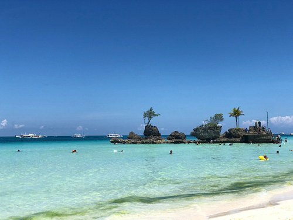
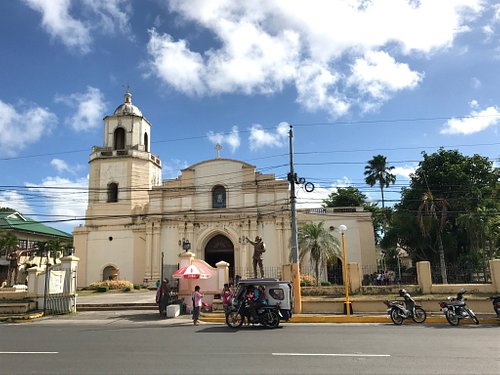
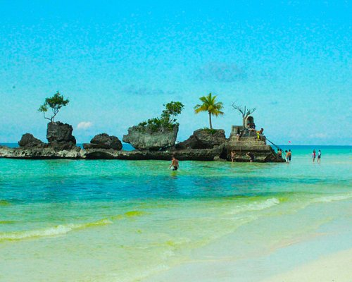
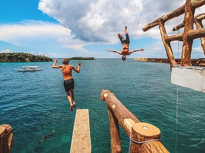
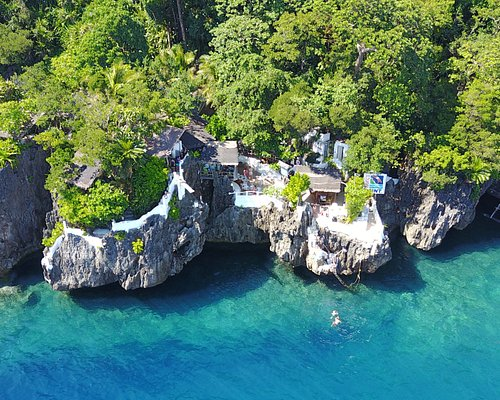
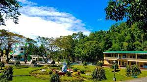

P
PROVINCE OF AKLAN
HISTORY OF AKLAN
Aklan is believed to have been settled in the 13th century by settlers from Borneo, ruled by the chieftain Datu Dinagandan which traded with its neighbouring islands. Aklan then became a part of the Kedatuan of Madja-as. Towards the end of the 13th century, Datu Dinagandan moved the capital from what is now Batan.
GEOGRAPHY OF AKLAN
Aklan is a mountainous province with over one-third of its land area sloping at 30 percent on the average. It is still one of the few provinces in the country to maintain a total of some 709 hectares of virgin forest. Mountain ranges traverse the island: one; the northern “knot” of Duyang and Tagacan; and the other, the Albinian mountain ranges in the west. Mount Madyaas, at 2117 meters, is the second highest peak on Panay and is shared by Aklan and Antique. The province has no active volcano, therefore, earthquakes have not been severe, although three faults pass through it. The province has a total land area of 1,817 sq. kms.
DEMOGRAPHICS OF AKLAN
The total population of Aklan as of May 1, 2020, reached 615, 475 based on the results of the 2020 Census of Population and Housing conducted by the Philippine Statistics Authority. Aklan's population accounted for about 8 percent of the total population in Western Visayas, which is 7,954,723.
ECONOMY OF AKLAN
The Province of Aklan, known for being the home of Boracay Island, recorded a substantial gross domestic product (GDP) growth of 22.5 percent in 2022, far exceeding the national economic growth rate of 7.6 percent.
TOURISM AND ATTRACTIONS
The Province of Aklan, known for being the home of Boracay Island, Ariels Point, Willys Rock, St. John Baptist Church, and Island Hpping Adventure recorded a substantial gross domestic product (GDP) growth of 22.5 percent in 2022, far exceeding the national economic growth rate of 7.6 percent.





SCHOOLS AND UNIVERSITIES
Aklan State University (ASU) - Located in Banga, Aklan, ASU is a public university offering undergraduate and graduate programs in various fields including agriculture, forestry, education, engineering, business, and more.
Northern Aklan Polytechnic College (NAPC) - Situated in Makato, Aklan, NAPC is a state college offering technical-vocational courses and programs in fields such as hospitality management, information technology, agriculture, and others.
Aklan Catholic College - A private Catholic institution in Kalibo, Aklan offering programs in education, business administration, information technology, and other fields.

.jpg)
.jpg)